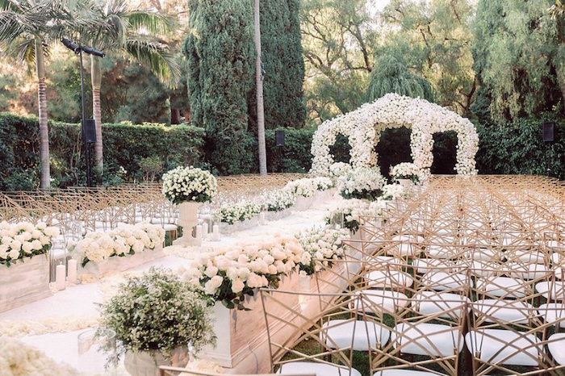
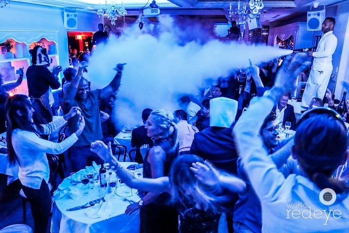

My wedding ceremony will be held outdoors in a beautiful garden or beach setting setting. Surrounded by our
closest family and friends, we will exchange vows and rings, making promises to love and cherish each other for the rest of our lives.

An example of a serene garden where the ceremony might take place.
During cocktail hour, there will be two or three fully-stocked open bars surrounding the main space where the guests are enjoying the music. For the guests who are too caught up enjoying the live DJ, there will servers walking around the crowd with platters of champagne and dry vodka martinis.
Hors d'oeuvres
A variety of hors d'oeuvres will be served to complement the drinks. Guests can expect a delightful mix
of savory and sweet bites, from macaroni and cheese bites to gourmet cheese platters.
Reception
The reception will a Bagatelle-inspired party dinner involving a live DJ, a light show, go-go dancers,
carbon dioxide
cannons, and a plethora of elevated surfaces for guests to dance on.

A friday night night at Bagatelle Miami Beach, a part of the inspiration for my wedding's
reception.